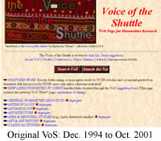

| VoS Developers' FAQ |
Frequently Asked Questions
about working on the VoS site |
(last revised
July 22, 2004)
- Where are other VoS developer resources?
- How is VoS structured in its new database environment?
- How to Edit VoS? (basic instructions on the
VoS editing interface)
- How "deep" into a site does VoS go to collect
links?
- How are sections for an author or topic commonly
organized?
- What is the citation style for VoS entries?
- What are some useful HTML tags for use in the VoS editing
forms?
- How do I consult the "legacy VoS" to rectify
truncated entries?
- How do I record my developer's work in the VoS worklog?
1. Where are other VoS developer resources?
The VoS Developers' Resource home page is at: http://vos.ucsb.edu/developers/index.asp.
It includes the following resources:
2. How is VoS structured in its new database
environment?
In Fall 2001, VoS was converted from a static Web site into a dynamic database-to-Web
system. Instead of editing static HTML pages in Dreamweaver (or another Web-authoring
program), VoS developers now log on to the "MyVoS" part of the site
and use Web forms to enter or revise information in the underlying SQL Server
database. The database then takes care of selecting, organizing, and outputting
information requested by the end user (who navigates with links or uses the
"search" function) on an "on-the-fly" basis.
The dynamic structure of VoS means that while the main "disciplines"
and "resources" on the VoS home page
are fixed, there is no fixed substructure analogous to a static HTML page and
its equally static subpages. In the old, static VoS, for example, the home page
(index.html) would have a first-level subpage like English Literature (english.html),
which in turn might have second-level subpages underneath it. But in the new,
dynamic VoS, clicking on "Literature
(in English") will open a universal template page called "browse.asp"
whose URL also contains an instruction at the end like "?id=3." (The
full URL of the English literature page is thus "http://vos.ucsb.edu/browse.asp?id=3")
This tells the database to pull out of its stockpile of information a certain
"category" (the English lit category) and output it in the browse.asp
template. Every category has a specific id number, and categories can contain
any number of other categories and information items within them. Clicking on
a category like "Metapages"
within the category of English Literature simply instructs the database to reuse
the browse.asp template with a new id number.
The result is that a user can "drill down"
to as specific a category as s/he desires--all the way down to a category devoted
to pages from a specific site, for example--and have that category show up on
its own VoS page. For example, on the English
Literature page the user can click on "Metapages"
to isolate just that category on its own page. Then the user can click within
the Metapages category on "About.com
Literature Pages" to isolate just the About.com sites on their own
page. In this example, the "About.com Literature Pages" category currently
has no other categories within it, only information items.
Understanding the principle of drilling down to the specific category one wishes
to work on (to add information items to, to reorder items, to move or copy items)
is important in editing VoS.
3. How to edit VoS? (basic instructions on the
VoS editing interface)
The following is a quick-start guide to the editing interface:
- Login: Go to VoS and click on the
link labeled "MyVoS" near the top of the screen. On the login screen
that appears, enter your user Name and Password.
- Initial MyVoS Editing Screen: After you have successfully logged
in, you will see the initial MyVoS editing screen as follows:
(click for larger image)
- Choose between editing the main VoS site or one of the VoS subprojects:
The initial MyVos editing screen is the gateway to editing VoS or VoS subprojects.
Choose the function you wish as follows (you will only be allowed to edit
resources for which you have the appropriate permissions):
- To edit the main VoS site, choose one of the functions under "Editing"
(usually "Edit"). This will present you with a screen that is
an editor's interactive version of the VoS site as it appears to the end
user. This screen allows the editor to browse to specific parts of the
site to work on.
- To edit one of the subprojects, choose
"EMC" or "UCSB
English Department Knowledge Base." (Note: editors may have permissions
only for some subprojects.) The following, for example, is the initial
edit text screen for the Dept. Knowledge Base. This screen shows an editor's
interactive version of the part of the main VoS site devoted to the subproject.
From the end-user's perspective, different subprojects appear on different
parts of the main VoS site; and they can also be seen on their own isolated
page by drilling down just to that category (see
above). On the main VoS site, for example, the Dept. Knowledge Base
is a category located as follows: Teaching
Resources > General
Teaching Resources > UCSB
English Department Knowledge Base.
- Adding/Revising Categories and Information Items:
- Drill down within the editing interface to
the category within which you wish to work (i.e., isolate that category
on its own VoS page). For example, if you want to add a category or information
item within the "Test Category" of the Dept. Knowledge Base,
first go in the editing interface to the Knowledge Base and then click
on "Test Category" to isolate that category on its own editing
screen.
- For most editing purposes, you will be using the "Edit" as
opposed to "Order" mode (selectable at the top-right of the
editing screen). Within the Edit mode, you can choose one of the following
functions:
--Edit Category This allows you to change the name of the category
you are working within.
--Add Category This allows you to add a category within
the category you are working within. Generally, add a category only if
you expect to be adding multiple information items or links within that
category [use the "Order by" field to alphabetize the category
as you wish, usually with the first letters of the category title] [check
the "Depth Flag" field if you want the user to have to click
on a category before seeing its contents; otherwise in most circumstances
the contents of a category will show along with the category name. This
option allows editors to control how deep or flat the contents of a page
with many subcategories will be as it appears to the end user.]
--Add Info This allows you to use the following screen to add information
items (i.e., links) to VoS:
For the VoS Stylesheet on the order, formatting, attribution, and other
details of links, see below. The main fields
in this Web form are as follows:
* Preliminary Details: Use for author name and institutional affiliation
for links that have the equivalent of a print author (e.g., "Jane
Doe (U. Florida)")
* Title of Site or Category Being Added: Title of Link (this is
the text that will have the actual link within it). If you are adding
the home page of a site from which you expect to gather multiple links
within a category named for that site, title the home page "Home
Page of [name of site]" and not just "home page." (This
is because the "random URL" feature on the VoS home page is
liable otherwise to pick out sites cryptically labeled only "home
page"; it also makes searching on sites difficult.) Thus, for example,
you might set up a category for "About.com", then include a
number of links, the first of which would be "Homepage of About.com"
*Details About Site or Category if Needed: Insert here information
about the site editor, annotation about the site, and other relevant details
as needed--all within parentheses. (See Stylesheet
for more on annotating sites)
* Default Order: This field allows editors to control the order
of links within a category. For example, use "0" for the home
page of a site to be sure it appears at the top of a category; use the
first letters of a link for alphabetical order; use "ZZ" to
be sure a link appears at the bottom. There are other ways you can improvise
to order links inside a category.
*Vetted: It is important to check this box. Otherwise, the link
you just added will appear only to editors and not to end-users on the
VoS site. (This feature was created because the public can sign up to
add links to VoS, but the links are kept "unvetted" until an
editor has screened them and modified them as needed.)
- To revise an already existing link, just cleck on that link in the edit
text mode, and the previously entered link information will appear, ready
for revision.
- Moving/Copying Categories and Information Items:
Ideally, editors would never enter categories or links redundantly in VoS.
Instead, the principle is that there should be just one database entry for
a specific piece of information, and then the database should be instructed
to present that information in multiple or different locations on VoS
as needed. Rather than moving or copying actual information in the database,
in other words, editors are doing the equivalent of placing a "shortcut"
or "pointer" on their computer desktop--i.e., a pointer to the actual
location of a resource.
The placement and copying of such pointers is handled automatically by the
Edit mode when a piece of information is first created. To move the location
of a category or link in VoS after the fact, or to duplicate a category or
link in another location in VoS, use the "Order" mode. This presents
the editor with a screen such as the following:
There are three functions you can invoke from this screen:
--Reorder: This allows an editor to revise the alphanumeric string
used to customize the order of a link within a category. You can manipuate
the Order string in an item to make a list of items appear in the order you
wish. For example, you can assign a string of "0" to make an item
appear at the top of a group of related items, and strings of "a1,"
"b1," etc., to make subordinate items appear where appropriate (see
example below).
--Select: This is the powerful function in the Edit Order mode. "Selecting"
a category or link tells the system that you want it to pay attention to this
particular item because you are about to move or copy its location on VoS.
After you select an item, you will see the "Place Selection screen"
as follows:
Click on the link on this page titled "Place Selection." At that
point, you will be returned to the editor's browsing environment. Browse to
the exact category in VoS within which you want to either move or copy
your selection. So, for example, browsing to "Architecture" (i.e.,
drilling down to isolate Architecture on its own VoS page in the editing interface)
will allow you to move or copy the selection into the Architecture category
at the top level of that category (along with any existing categories at the
top level within Architecture). If you wish to move or copy your selection
to a location within a sugcategory in Architecture like "General Resources,"
first drill down to that subcategory first.
When you are at the proper location, choose "Move" or "Copy"
to execute the maneuver (you'll be prompted for a confirmation).
You can move or copy entire categories. For example, the "Science Fiction"
category with any subcategories and all information items can be duplicated
under Science, Technology and Culture, under Literature, etc.
--Remove: This function allows you to remove the
current instance of an information item without deleting the item from the
database (where it may appear in other locations in VoS as well). (If you
are sure you want to delete the item from the database entirely, use the Delete
function in the Edit mode (see below).) [Note: Currently,
the Remove function is not implemented for information items. It should be
working shortly.]
- Deleting categories and links:
Partly because of safety, the process of deleting information is a bit awkward
in VoS. While in the Edit mode, the "delete" button next to a link
will delete an individual link item. However, the delete button will not delete
a category item containing links or other categories within it unless you
first drill into that category and delete the materials there individually.
Note that deleting an item or category removes it entirely from the database
(and thus all instances of the item or category, which may appear in multiple
locations in VoS.) To remove only the current instance of an item while leaving
the underlying item in the database (and at other locations in VoS), use the
"Remove" function (see above).
4. How "deep" into a site does VoS
go to collect links?
VoS is conservative in collecting subpages or sections within a site. Usually
the user is best served with just a link to the home page of the site plus,
where appropriate, a brief descriptive annotation. In the case of important
or large sites, however, VoS sometimes collects links not just to the home page
but to the main top-level pages. These latter links are presented in a subordinate
list under the main link. Alternatively, VoS may harvest only selected resources.
For example:
- [Category] Shameless Scribblers (set of pages
with brief bios of women authors writing in English, mostly from the 18th
and 19th centuries; the bios are from the 1911 Encyclopedia Brittanica)
(The Write Page)
You can manipuate the Order string in an item to make a list of items appear
in the order you wish. For example, you can assign a string of "a0"
to make an item appear at the top, and strings of "a1," "b1,"
etc., to make subordinate items appear where appropriate.
In general, however, be careful not to over-collect links from a site because
this leads to problems maintaining VoS in the future. Sites often change their
structure.
5. How are sections for an author or topic commonly
organized?
Generally, VoS follows the principle of putting general resources for an author
or topic near the top of a listing, more specific resources (e.g., links to
essays or books) further down, and critical works at the bottom. Where there
are few links for an author or topic, there is no need for formal organization
of the links. But where there are many links or where it otherwise seems to
make sense, Vos uses variants of the following organizational scheme (note the
use of subordinate lists and boldfaced section headings):
- Author
- General Resources
- Poetry
- Prose
- Criticism
Usually, the lists are consistent on any particular page, so just look around
to see what to do in a particular instance.
6. What is the citation style for VoS entries?
VoS has followed a consistent, simplified citation style over the years, with
variants. The main principle is that VoS is not a print bibliography that requires
full citations but a functioning hypertext guide that adds only enough information
to allow users to see at a glance the gist of a link, its author or source,
and (usually through institutional affiliation) its rough level of "authority."
For the latter purpose, institutions but not departments or ranks are included
(because otherwise it becomes impossible to keep VoS up to date)--though sometimes
it is appropriate to mention department or rank in the description of a link
(e.g., "an undergraduate journal").
The VoS citation style can be seen in the following examples:
- Meta-Site, Text Archive, or other Large-Scale site:
- Web page (home pages for authors or topics that are not essays, books,
etc.):
- Online essays, books, etc. (i.e., works with a clear print analogue,
even if an essay is organized as a hypertext construct):
- Journal
- Course
- On a VoS page or section devoted to courses:
- On other VoS pages:
Note these issues:
- Author Designation (Content-Author vs. Web-Author): Content-authors
(e.g., authors of essays) come before the link to the site; Web-authors (the
individuals, journals, or Web sites) responsible for the Web site are named
after the link. Where the content-author is also the Web-author (e.g., someone
who writes and essay and puts it on his or her home page), only the content-author
is mentioned. Web pages that do not have print analogues (e.g., VoS itself)
have only a Web-author. Multiple authors may be listed. Where the authorship
is some kind of collaborative venture, use a slash "/" (e.g., U.
Penn. / U. Virginia). Where a link is from a large site, it is sometimes best
to cite the name of the site as the author rather than the individual responsible
for the site (e.g., "The Write Page").
- Institutional Affiliation: Use these conventions: Delaware U., U.
of Tennessee, Bowdoin C. Where the institution is unlikely to be recognized,
add some geography (e.g., Abnormal C., Trenton, NJ). Assume that users may
be from other parts of the world and may not recognize common U.S. acronyms
for institutions (so use "U. California, Santa Barbara," not "UCSB").
Omit institutional affiliations in cases where there are three or more authors.
- Link Titles: Cite the title as you find it on the site and use normal
conventions (quotes, italics, etc.) to indicate the genre of the resource
(Web pages without a print analogue appear in normal text). Use your judgment
about including full or long titles, which can sometimes add descriptive value
(e.g., "Apple: the Journal Devoted to Theory of Fruit").
Date: Note the inclusion of year of publication (if known) in parentheses
within the link-title of essays, books, etc.
- Descriptions: Where it is clear what a resource is (by its title
or placement in a particular section of VoS), no description is needed. Often,
for example, resources such as the following require no description: "John
Donne page," "Keats-Shelley Journal". Otherwise, it
is useful to add a concise description--perhaps compounded from brief quotations
from the site supplemented by other matter. For example: ("highly accurate
and reliable electronic editions of works" encoded in SGML/TEI; with
HTML versions). Descriptions are included in parentheses; and semi-colons
are preferred to periods. Normally, VoS removes upper-case at the beginning
of a quoted sentence. VoS does not normally include evaluative language in
a description (e.g., "good," superb," "brilliant,"
etc.). Instead, VoS uses descriptive or analytical language to achieve the
same effect (e.g., mentions of what a site includes, use of such words as
"extensive," "well-organized," "annotated,"
etc.)
7. What are some useful HTML tags for use
in the VoS editing forms?
The following are some of the HTML tags that may be entered in the editing
forms for VoS or the Developers' Task Log to produce formatting effects:
- Highlighting Text (useful in both VoS and the Developers' Task Log)
To create italics, bold, underline, put these tags around text as follows
(note that the end-tag is preceded by a backslash). VoS itself uses italics
but not bold or underline:
- <i>Example of italic text</i>
- <b>Example of bold text<b>
- <u>Example of underlined text</u>
- Adding a Hypertext Link (useful in both VoS and the Developers' Task
Log)
The HTML for a link is as follows (where, in this example, "Voice of
the Shuttle" is the visible text for the link):
_______________________________________________________________
For more on HTML, see the NCSA's "Beginner's
Guide to HTML":
<http://archive.ncsa.uiuc.edu/General/Internet/WWW/HTMLPrimerP1.html>
8. How do I consult the "legacy VoS"
to rectify truncated entries?
When
VoS was migrated in 2001 from its form as a static Web site to a database,
the automated process that facilated the migration truncated all text in the
"details" field of the Add Info form to a certain number of characters.
This is why you will occasionally see an item in VoS in which the descriptive
annotation suddenly cuts off in mid word. If you wish to find the original
VoS annotation for the site, go to the legacy site at: http://www.english.ucsb.edu/faculty/ayliu/locked/VoS_Original/index.html
(You will need a login available from Alan).
9. How do I record my developer's work in
the VoS worklog?
After
an editing session, VoS developers should go to the Developers
Task Log, login, and enter the date, the number of hours spent on the
session, and a brief description of the task (e.g., "I concentrated today
on fixing links on the English Literature: Modern page at http://vos.ucsb.edu/browse.asp?id=2747."
Where appropriate, include links to the main areas in which you have been
working (for the convenience of Alan in reviewing work on the site).
{kind=link}
{kind=link}
{kind=link}
{kind=link}
{kind=link}
{kind=link}
{kind=link}
{kind=link}